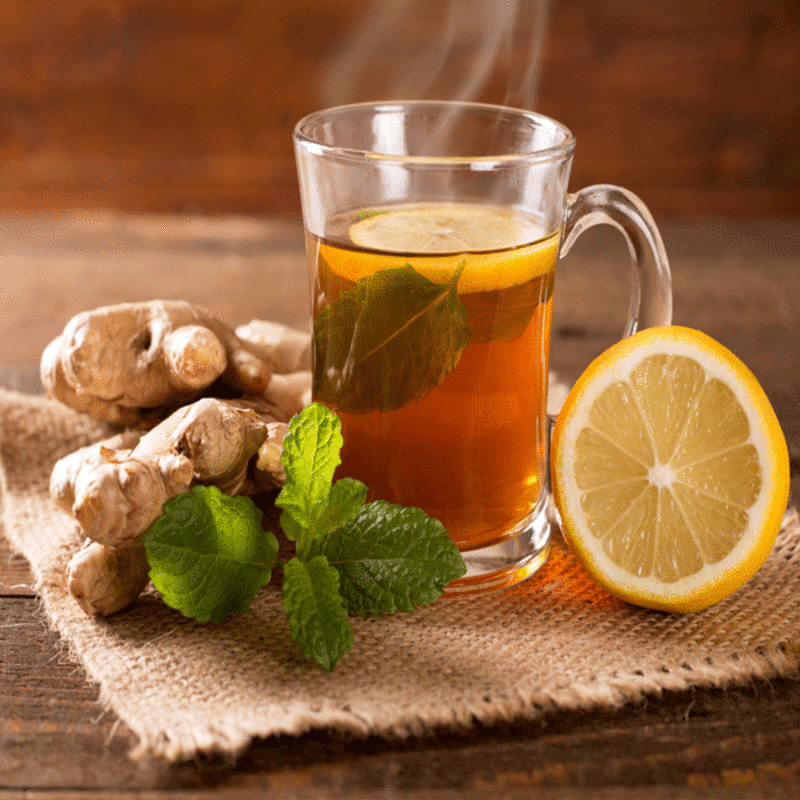
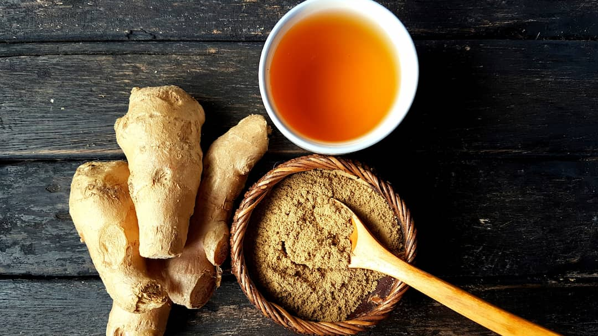

Brew Your Tea
- Honey Lemon Green Tea
- Cardamom Tea
- Ceylon Black Ginger Tea

Method
Brew Green Tea bag and ginger in 1 cup boiling water for 3 minutes. Remove tea bag and ginger. Squeeze in juice from lemon wedge and stir in honey and salt.
Method
Add tea leaves and cardamom pods to boiling water & brew well Strain the plain tea then add milk and sit well

Method
Boil water. Before preparing the tea, warm the tea pot by adding a small amount of boiling water to the pot. Swirl the water & remove before preparing the tea. Place tea bag in a tea pot & pour boiling water into it. Add crushed ginger. Cover the teapot. Allow to simmer about 4 minutes.